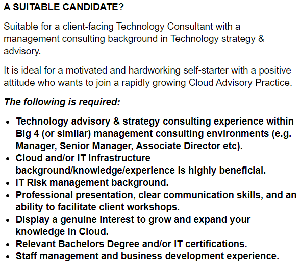

Why this job? Well, because this job ticks all the boxes for me. It incorporates
all the
skills and fields I want to spend my time developing. A few of the standout reasons I’m attracted to
this role are:
It requires innovative IT solutions; I thrive at critical thinking and problem-solving, so I believe
I will be pleased with a level of challenge.
This is a consultancy role; working with others to make their jobs easier brings me genuine joy.
This role incorporates risk management; I have a keen interest in Cyber Security so I feel this will
be a great opportunity to learn more and develop my skills.
It also advertises opportunities to develop knowledge in cloud technologies, which is something I
think is critical to learn in current times. There are more and more businesses incorporating cloud
computing into their operations, so experience with cloud is a must have for employment prospects.
What skills are required by this job?

To be successful in this or similar roles, experience is a must. Familiarity with consultancy roles and
a background in cloud computing, IT risk management, and IT infrastructure, are all highly sought-after
attributes. To be considered suitable for this role one would mostly likely need to gain experience in
another consultancy or managerial role.
What skills do I currently have?
Clear, concise communication skills, both written and spoken.
An effective typist at an average 90wpm.
Experienced in Adobe suite and Office 365 apps.
Confident at multi-tasking and prioritising.
Professional presentation and conduct.
While I have a few general skills applicable to many
workplaces, I have much to learn and develop in the ways of field-specific skills and knowledge. I have
proven to be adept at picking up new concepts and can adapt to new environments with ease; I am sure
this will prove to be a useful skill in my education and professional endeavours.
How will I acquire these skills? I have a general plan below that spans the next 5
years. This may change some or a lot, most likely the latter.
Continue working towards my Bachelor of Information Technology, explore all the different fields
of IT and further develop my knowledge.
Same as year one, practice my skills outside of schoolwork to develop a portfolio.
Focus on completing my degree and further honing my skills outside of school.
Start looking for an entry-level position that will allow me to start accumulating the IT
infrastructure and risk management experience required of my dream job. During this time, take on a
Graduate Certificate course in Information technology.
5. After completing my graduate certificate, I hope to apply for a master’s course in Cyber
Security. Allowing me to climb into managerial and consultancy roles.